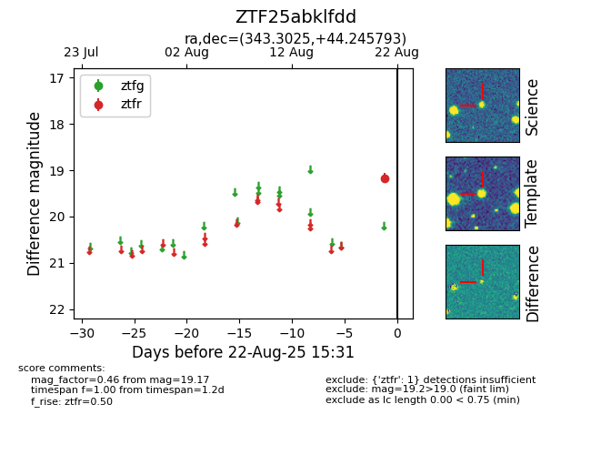

Target ZTF25abklfdd at 2025-08-22 15:31, see:
FINK: fink-portal.org/ZTF25abklfdd
Lasair: lasair-ztf.lsst.ac.uk/objects/ZTF25abklfdd
ALeRCE: alerce.online/object/ZTF25abklfdd
alt names
ZTF25abklfdd (ztf,alerce)
coordinates:
equatorial (ra, dec) = (343.3025,+44.24579)
galactic (l, b) = (101.6056,-13.67547)
photometry
last ztfr=19.17
1 ztfr detections
